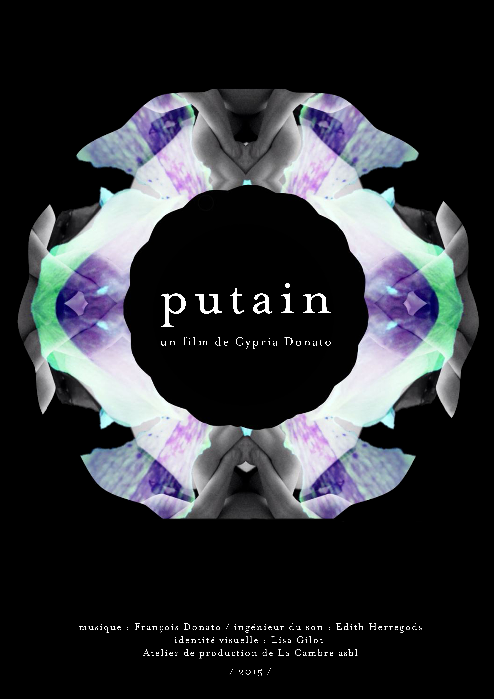
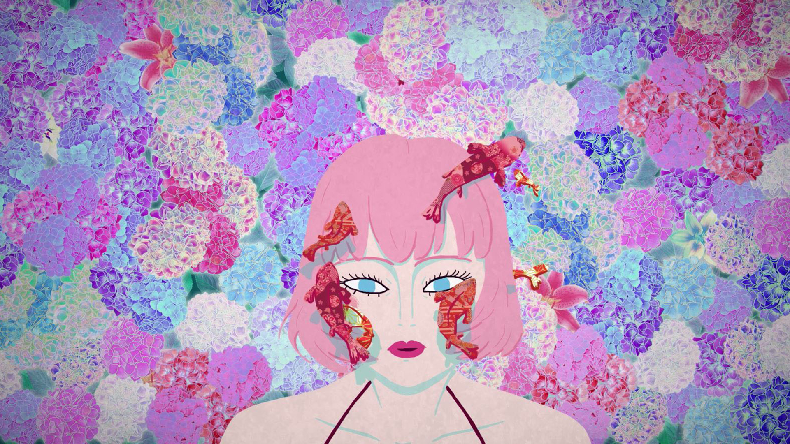
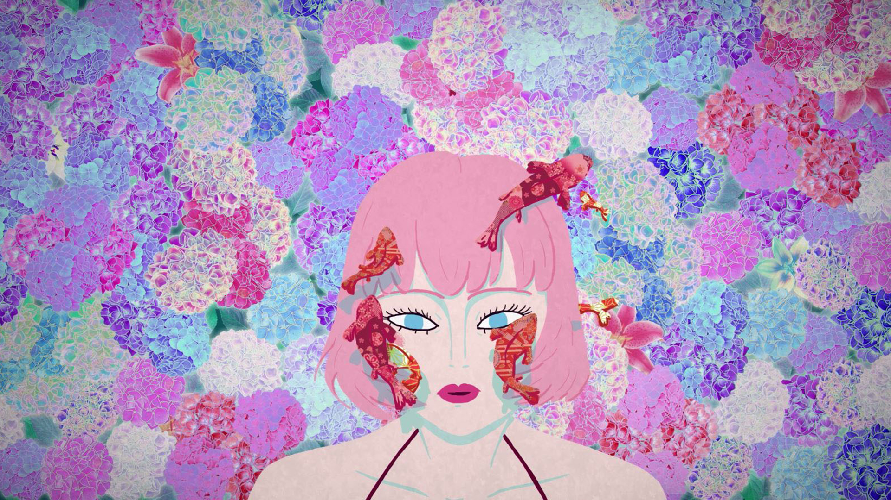

Summary : A voyage through the complex sensations experienced by six female characters in their daily life as prostitutes, and the ways their bodies are involved and exposed.
PUTAIN
After three years of reading, searching and thinking, I finally decided for my graduation project to make a film about prostitution. One year later, this 5 minutes short was born. 
ORIGINS
Every now and then the issue of prostitution is all over the medias, and the discussions are always the same : should it be legal ? Who is to blame for this ? How to save prostitutes from prostitution ?
And I was listening to these debates, but with other questions in mind. I wanted to know why some people feel like going to prostitutes for sex ? What is really exchanged during the relationship between a client and a prostitute ? What is sold and what is bought ? Is it really a body ? Sex ? Love ? Tenderness ? Violence ? A getaway ? All of that ?
And I had this feeling that prostitution might take a bigger part in our society than it looks.
It seemed obvious that is not a simple legal matter, but a social issue that deserves to be studied and explored without any judgment but the will to understand.
 



INTENTIONS
Exploring this issue, and working for four months with the association Entre 2 that is helping prostitutes in their daily life, I discovered a very complex world that could not, of course, be described in 5 minutes. My first idea of making a documentary out of this matter fell apart quickly, considering the limited time I was given to animate and finish the film.
This is why I concentrated on giving a sensitive and intimate approach on prostitution. Inspired by stories I have been told, or I have red, I tried to represent some ways that prostitutes bodies are involved, how they feel in their daily life, how they apprehend this particular work they do.
My goal was not to give any personal opinions in this movie, nor to make some « shock-statement » about prostitution, to denounce or accuse anything or anyone. I wanted to share with the audience a more sensitive approach of the problem, to invite people to look at it like I do, with questions and tenderness. Whether it is clients or prostitutes, it is human beings we are talking about.
All in all, I tried to make a delicate film.


ANIMATION
Using animation felt like the right media to do that, as it allowed me to put a distance with reality. Therefore I am not telling someone's story, but showing generic situations that concerns more than one person in particular. Also as there are no limits in what I could do and transform bodies and backgrounds, I was able to build complex metaphors and images to evoke things, more than showing them. Using bright and vivid colors helped to create a shift with the gravity of the subject.
And finally animation is all about movement, and I wanted to study ways of walking, undressing, waiting...